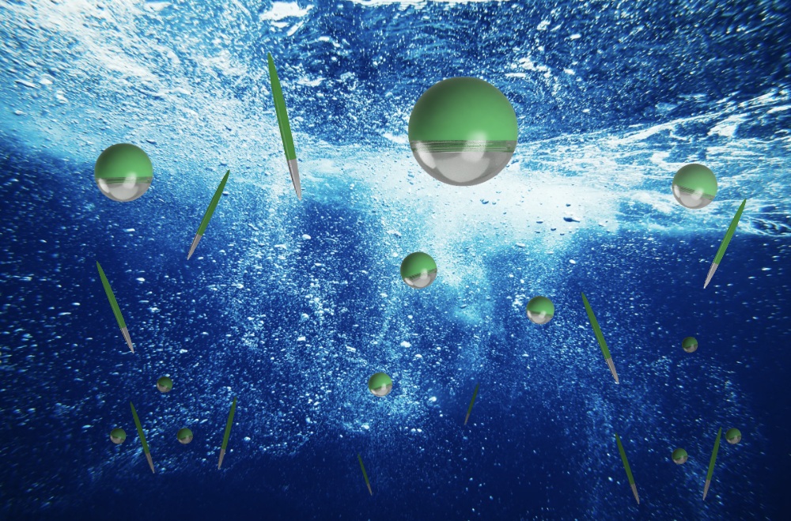
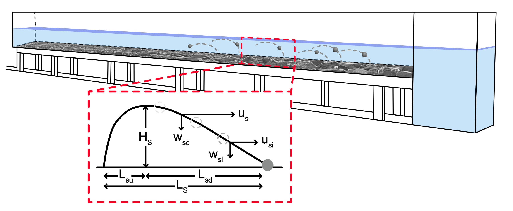

Bio-Inspired Tracers for Ocean Sensing
I am developing novel bio-inspired tracer particles for measuring turbulence in marine environments. Drawing inspiration from phytoplankton morphology, these custom 3D-printed particles are equipped with onboard accelerometers to capture time-resolved flow dynamics. This technology enables unprecedented measurements of microscale transport processes relevant to ocean mixing, particle aggregation, and biogeochemical cycling.
Visualization of bio-inspired tracer particles in turbulent flow for ocean sensing applications
Reduced Gravity Sediment Transport
This work explores sediment transport dynamics under reduced gravity conditions. Using experimental and computational approaches, I investigate how particles behave in fluid environments with altered gravitational fields. This research has applications for understanding sediment processes on planetary bodies with lower gravity than Earth and for developing predictive models of particle transport in extraterrestrial environments.
Experimental framework for studying sediment transport under reduced gravity conditions